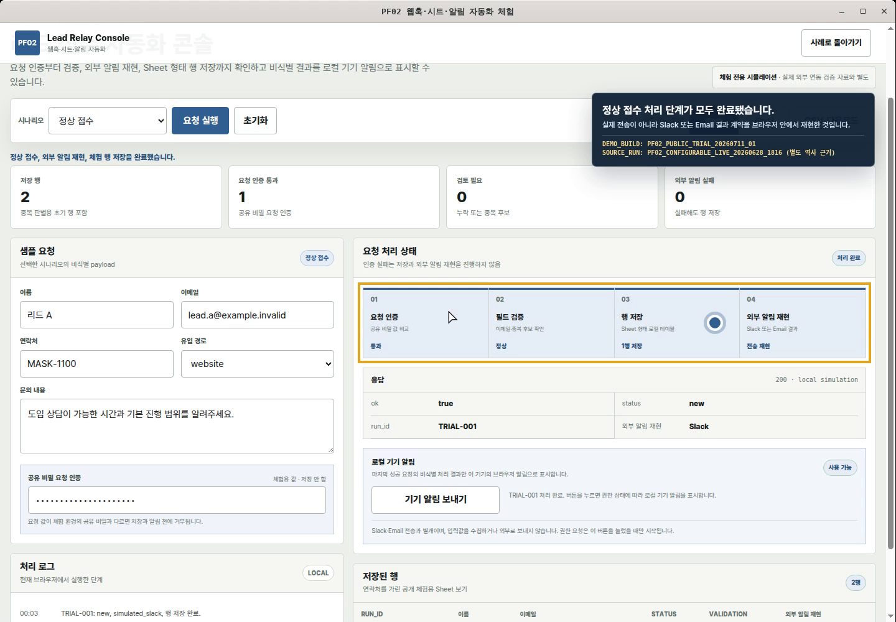

CORE · PF02
접수·검증·저장·알림
문의나 신청을 안전하게 받고, 유실 없이 다음 담당자에게 넘기는 기본 자동화입니다.
- 폼 또는 웹훅 입력 1종과 필수값 검증
- 중복·인증 실패·알림 실패를 성공 건과 분리
- Google Sheets 또는 시트형 결과, Slack 또는 Email 알림 구성
공개 체험 경계 실제 Google Sheets·Slack·Email에 전송하지 않습니다. 로컬 기기 알림은 사용자가 허용한 경우에만 비식별 결과를 표시합니다.
